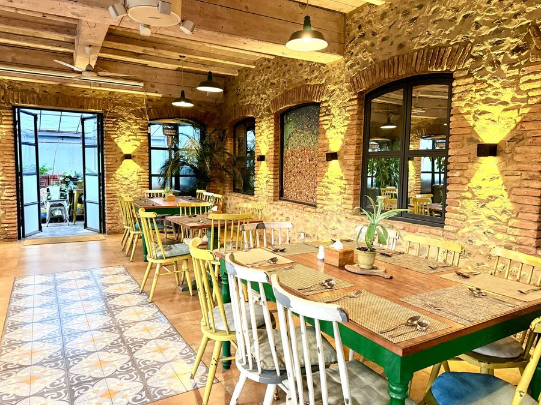

Tarih: bugün
Doğa Restaurant Alev Hanım'ın Mutfağı
Bugün mutfakta
- serpme kahvaltı sofrası
- köy usulü sıcak tencereler
- demlikte taze çay
- günün tenceresi? sorun, söyleyelim
Her gün 10:00–18:00

Çatalca'ya günübirlik mi geliyorsunuz? Yol ve saat notları burada.

cumartesi & pazar sabahı
Hafta sonu kahvaltısına masa sorun
Cumartesi ve pazar sabahları, şehirden kahvaltıya çıkanların yola düştüğü saatlerdir. Gelmeden önce masanızı sormak işinizi kolaylaştırır. Günü ve saati seçin, kaç kişi olduğunuzu çentik atarak sayın; WhatsApp mesajınız hazır olsun.
Mesaj hazırlayıcı tarayıcınızda JavaScript açıkken çalışır. Masanızı doğrudan telefonla da sorabilirsiniz: 0531 721 98 71
WhatsApp mesajınız
Mesaj kendiliğinden gönderilmez; WhatsApp'ta siz gönderirsiniz. Masanız, işletmeden yanıt geldiğinde kesinleşir. Hafta içi bir gün için takvimli rezervasyon sayfasına geçin.
Bu defterde neler var?
 Serpme kahvaltı ve kahvaltı sözlüğüMutfakSofrada sık görülen tabaklar; menemenden pişiye kısa açıklamalar.
Serpme kahvaltı ve kahvaltı sözlüğüMutfakSofrada sık görülen tabaklar; menemenden pişiye kısa açıklamalar.- Köy usulü tencerelerMutfakÇorbalar, zeytinyağlılar, kuru baklagiller ve günün listesini sorma notu.
 Çatalca'ya nasıl gelinirZiyaretArabayla, toplu taşımayla ya da grupla gelenlere notlar ve “ne zaman gelsem?” planlayıcısı.
Çatalca'ya nasıl gelinirZiyaretArabayla, toplu taşımayla ya da grupla gelenlere notlar ve “ne zaman gelsem?” planlayıcısı. Masa ayırtmaRezervasyonTakvimden gün seçin, kişi sayısını işaretleyin, mesajınızı gönderin.
Masa ayırtmaRezervasyonTakvimden gün seçin, kişi sayısını işaretleyin, mesajınızı gönderin. Harita, telefon, hazır mesajlarİletişimAdres, yol tarifi ve tek dokunuşla açılan WhatsApp mesajları.
Harita, telefon, hazır mesajlarİletişimAdres, yol tarifi ve tek dokunuşla açılan WhatsApp mesajları.
Çatalca'ya günübirlik geliyorsanız
- Navigasyona “Doğa Restaurant Alev Hanım'ın Mutfağı” yazmanız yeterli; adres Kaleiçi, Martı Sokak 6-8.
- Hafta sonu sabahı geliyorsanız yola çıkmadan masanızı sorun.
- Kapı her gün 10:00'da açılıyor, 18:00'de kapanıyor; dönüş yolunu buna göre planlayın.
- Toplu taşımayla geliyorsanız güncel hat ve saatleri yola çıkmadan kontrol edin.
Haftanın saat çizelgesi
Her gün aynı saatler: 10:00'da açılıp 18:00'de kapanıyoruz. Bugünün satırı kırmızıyla daire içine alındı; kırmızı çizgi şu anki saati gösterir.
Her gün 10:00–18:00
- Pazartesi
- Salı
- Çarşamba
- Perşembe
- Cuma
- Cumartesi
- Pazar
Defterin arasına sıkışanlar


Sık sorulanlar
Hafta sonu kahvaltısı için yer ayırtmak gerekiyor mu?
Güne göre değişir. Hafta sonu sabahları gelmeden önce masanızı sormanızı öneririz; yukarıdaki hafta sonu notu ya da Rezervasyon sayfası mesajınızı hazırlar.
Günün menüsünü nasıl öğrenirim?
WhatsApp'tan sorduğunuzda güncel menüyü gönderelim. Mutfak sayfasındaki “Mutfağa sor” notu bu mesajı sizin için yazar.
Paket servis ya da gel-al var mı?
Paket servis ve gel-al seçenekleri için lütfen arayın; bulunduğunuz yere göre bilgi verelim.
Kalabalık bir grupla ya da kutlama için gelebilir miyiz?
Kalabalık masalar için önceden haber verin: kişi sayısını, günü ve saati yazın, uygunluğu birlikte netleştirelim.
Hangi saatlerde açıksınız?
Haftanın her günü 10:00–18:00 arası açığız.
Fiyatları nereden öğrenebilirim?
Güncel fiyatlar için telefonla ya da WhatsApp'tan sorabilirsiniz; bu sitede fiyat listesi yer almıyor.
Misafirlerin puanı
Google Haritalar'da 553 değerlendirme, ortalama 4,9 puan. Yorumların tamamını Google'da okuyabilirsiniz.
Google yorumlarını açın